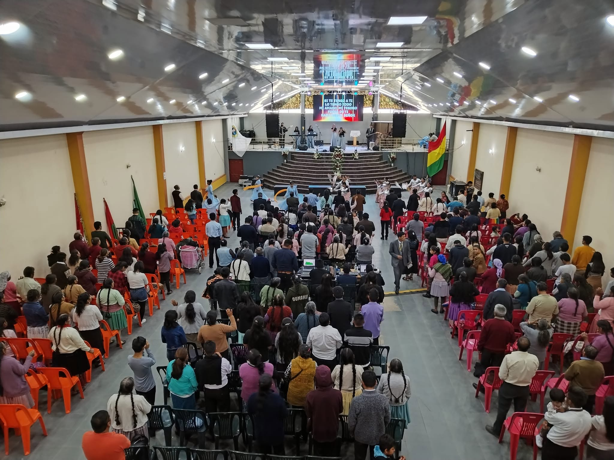

El Tema
"La Novia de Cristo"
Un tiempo preparado para la edificación, comunión, renovación espiritual y fortalecimiento de la fe de cada mujer en el Señor. Ven a recibir Palabra, comunión y bendición junto a mujeres de toda la congregación.
Programa
Horario del Congreso
Importante
Requisitos e Inscripción
Inscripción gratuita
Incluye alimentación durante el congreso
Registro hasta el 29 de agosto
Confirma tu lugar con anticipación por WhatsApp
Edad mínima: 16 años
Se sugiere no asistir con niños para que cada participante pueda recibir la Palabra con plena atención y disfrutar el programa.

Sobre el ministerio
Ministerio Misión Boliviana — Payacollo
Con gratitud abrimos las puertas de nuestra congregación para recibir a mujeres de toda la ciudad en este tiempo de renovación espiritual.
Pastor Félix Costano Coca
Ubicación